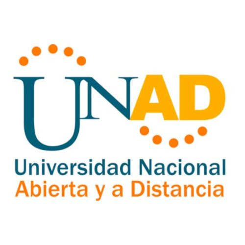

|
Objetivos generales:
-el objetivo de esta actividad es conocer que es CSS y CSS3 -conocer como aplicar CSS y cuales son los estilos internos y externos Objetivos especificos: -Tener claridad de como funciona CSS y CSS3 -saber como aplicar los estilos internos y externos de CSS Tematicas: CSS3 es un lenguaje usado para definir la presentación de un documento estructurado escrito en HTML o XML (y por extensión en XHTML) y CSS es un lenguaje para la composición y estructuración de páginas web (HTML o XML). Este lenguaje contiene elementos de codificación y se compone de estas “Cascading Style Sheets” que también se llaman archivos CSS |
 |